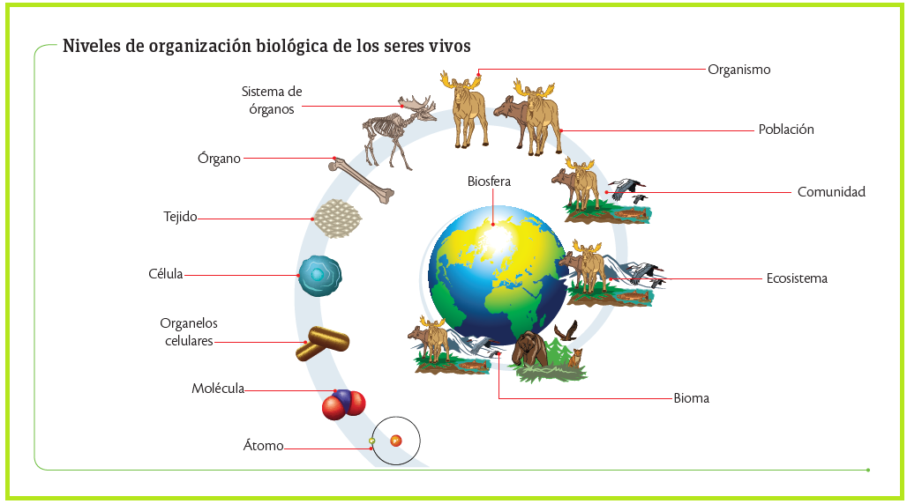
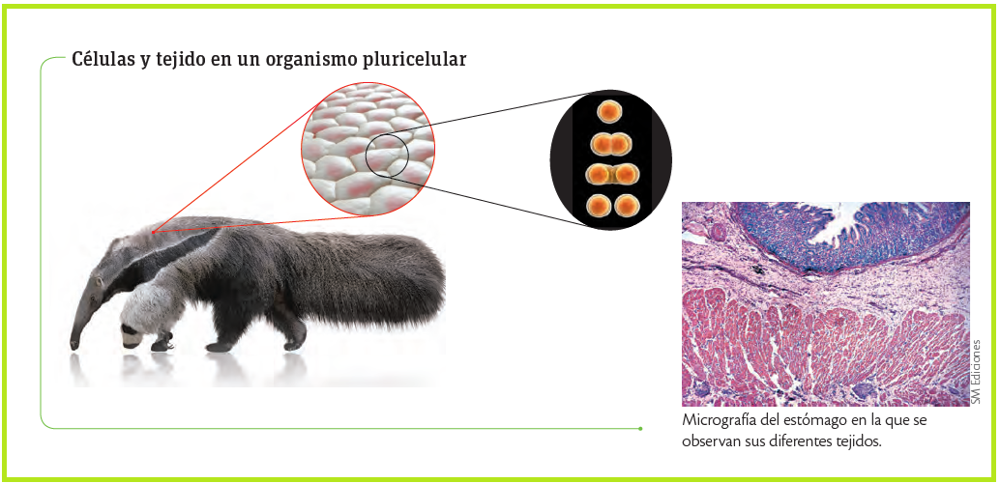
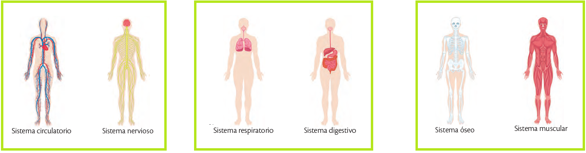
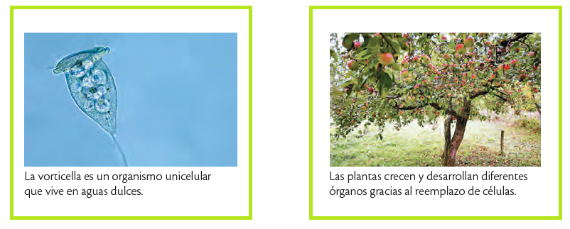
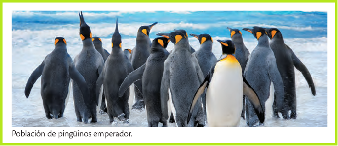
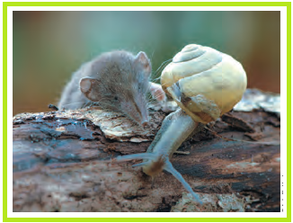
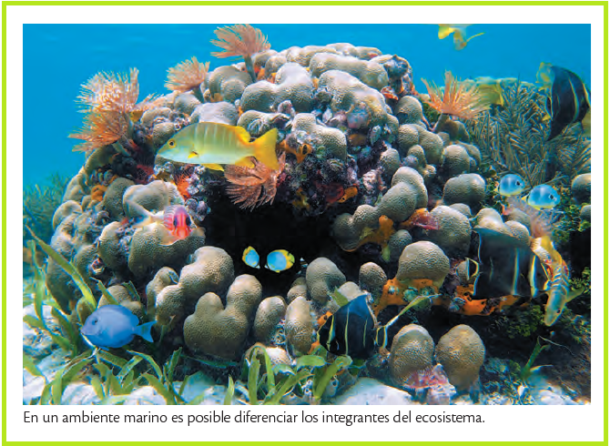
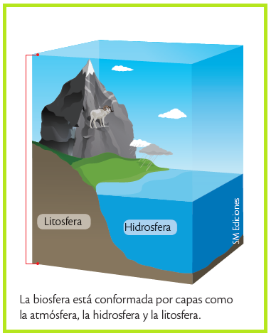

La vida se organiza como un edificio de bloques, donde cada nivel (desde el átomo hasta la biosfera) construye al siguiente.
Lo más asombroso son las propiedades emergentes: "superpoderes" que aparecen solo cuando las partes trabajan juntas; por ejemplo, una célula no tiene pulso, pero un corazón unido sí.
En resumen, somos una cadena perfecta donde el todo es mucho más que la suma de sus partes.

Los átomos y las moléculas se encuentran en este nivel de organización; se presentan en seres vivos y no vivos..
Es la unidad estructural de la materia; está conformado por electrones, protones y neutrones.
Cuando se unen dos o más átomos de un mismo elemento o de elementos diferentes forman moléculas. Un ejemplo es la hemoglobina, la proteína que se encuentra en los glóbulos rojos y que se encarga de transportar el oxígeno y el dióxido de carbono en la sangre.
La organización interna de los seres vivos corresponde a células, tejidos, órganos y sistemas. Los individuos, las poblaciones, las comunidades, los ecosistemas y la biosfera son niveles exclusivos para los seres vivos.
Es la unidad básica de los seres vivos. Cada célula realiza funciones de nutrición, relación y reproducción. Los seres vivos son formas de organización que varían según el grado de evolución que tengan.

Los tejidos se agrupan para formar órganos que cumplen funciones dentro del cuerpo. Por ejemplo, en los animales, el estómago consta de diferentes tejidos, y es un órgano donde ocurre parte de la digestión; en las plantas, el tallo está conformado por tejidos dérmico, fundamental y vascular, y se encarga de conducir los nutrientes a todas las estructuras del organismo.
Varios órganos se agrupan en sistemas para realizar una tarea coordinada. Por ejemplo, órganos como la boca, el esófago, el estómago, el hígado, el páncreas, el intestino delgado y el intestino grueso se asocian para realizar la digestión. Otros ejemplos de sistemas en el ser humano son el sistema circulatorio, el sistema respiratorio y el sistema excretor, entre otros. El trabajo coordinado de las partes de un ser vivo constituye un organismo.

Son seres únicos que se caracterizan por la particularidad de su información genética. Con base en la forma de organización celular, los individuos se clasifican en unicelulares o pluricelulares.
Los organismos unicelulares están constituidos por una sola célula que realiza todas las funciones vitales: capta lo que ocurre a su alrededor, se mueve hábilmente en busca de alimento, expulsa agua y desechos, escapa de los depredadores y mantiene el equilibrio interno. Las bacterias, el paramecio y la ameba son ejemplos de organismos unicelulares.
Los organismos pluricelulares están formados por muchas células. Tienen mayor tamaño que los seres unicelulares, aumentan su tiempo de vida como consecuencia del reemplazo de las células deterioradas por otras, incrementan su equilibrio interno y tienen más probabilidades de defenderse de los depredadores. Algunos organismos pluricelulares son los animales y las plantas.

Agrupan a los individuos de una misma especie que ocupan un área más o menos definida por barreras físicas como ríos y montañas, y comparten el mismo tiempo; además, los organismos de una población pueden reproducirse entre sí, lo que asegura que la especie no desaparezca.

Son grupos de seres vivos de diferentes especies que se relacionan entre sí porque habitan conjuntamente en un lugar y en un tiempo determinados. Por ejemplo, la comunidad de un bosque incluye poblaciones de aves, lombrices, reptiles, mamíferos, plantas, hongos y microorganismos que interactúan en ese ambiente. La estructura y la estabilidad de las comunidades se pueden alterar por la actividad humana, el fuego, las inundaciones y la sobrepoblación, entre otros factores.

Están conformados por seres vivos que habitan un medio específico y se relacionan entre sí y con los factores abióticos del lugar.
Entre los seres vivos y el medio hay un continuo intercambio de materia y energía a través de las cadenas alimenticias y de las redes tróficas, que mantiene la estabilidad de los ecosistemas.

Está conformada por la atmósfera, la litosfera y la hidrosfera. Es el nivel más complejo de organización y agrupa a todos los ecosistemas de nuestro planeta.
